Live demo
Where I started
Getting the three-container app onto Rahti
The starting point was the same Nginx / Flask / MySQL application from the previous exercise, running locally with Docker Compose. This week's job was to get the same three pieces running on Rahti instead — as Kubernetes Deployments and Services, with the frontend exposed publicly and the backend and database only reachable internally.
On the Kubernetes side that meant a Deployment and Service for each of the three components, a ConfigMap for ordinary configuration, a Secret for the database credentials, a PersistentVolumeClaim for MySQL's storage, and a public Route pointing only at the frontend.
Shipping the images
Before any of that could run on Rahti, the frontend and backend images had to exist somewhere Rahti could pull them from. I tagged both with a version number and pushed them to Docker Hub.
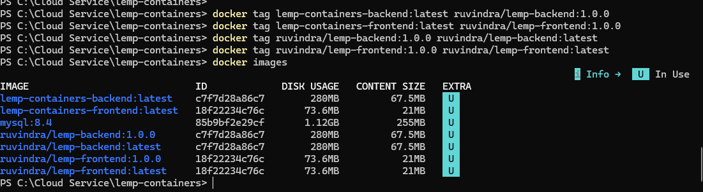
ruvindra/lemp-backend:1.0.0 and ruvindra/lemp-frontend:1.0.0.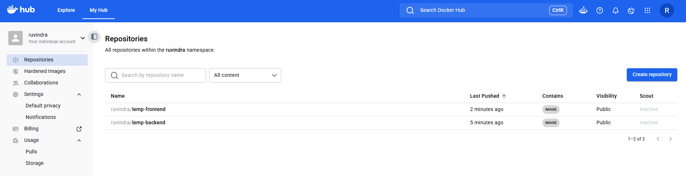
The first crash
The very first deployment attempt left the frontend Pod stuck crash-looping with:
nginx: [emerg] mkdir() "/var/cache/nginx/client_temp" failed (13: Permission denied)
Rahti runs containers under an arbitrary, non-root user ID, so Nginx's default cache directories weren't writable. The fix was to point Nginx's temp/cache paths at /tmp instead, inside nginx.conf, which is writable regardless of UID — then rebuild and redeploy.
Does it actually work?
Proving the three tiers talk to each other
Getting Pods to Running doesn't prove much on its own — the real test is whether a request actually crosses all three tiers and comes back with something that could only have come from the database.
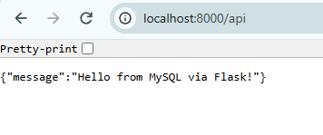
/api returning {"message":"Hello from MySQL via Flask!"} — the frontend's request reached the backend, which reached MySQL, and the answer made it all the way back.That first version of the backend only ever returned a fixed string, though — so it didn't really prove MySQL was doing anything. I added two endpoints that make the database's actual involvement unmistakable:
/api/time — a real read
Runs SELECT NOW(); and hands back MySQL's own clock. A value that changes every time you refresh can't be hard-coded.
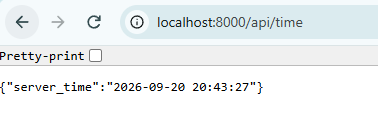
/api/visits — a real write
Every page load sends a POST here, which increments a counter stored in a visits table and returns the new total. Because the number lives in MySQL rather than the container, it keeps climbing across refreshes instead of resetting.
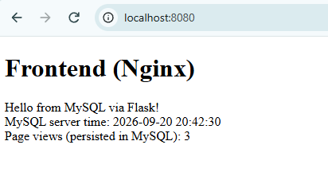
The interesting part
Chasing down a persistence bug
The assignment asks for proof that the database survives its Pod being deleted and recreated. My first attempt at this didn't go as planned, and tracking down why turned into the most useful part of the whole week.
It didn't survive
I deleted the running MySQL Pod, expected the visit counter to pick up where it left off once the replacement came online, and instead got this:
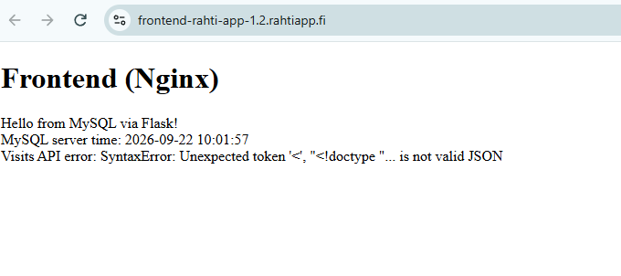
/api/visits came back with an HTML error page instead of JSON.oc get pvc showed mysql-data stuck on Pending — never bound to any actual storage.
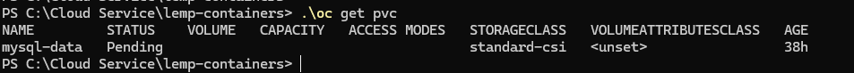
oc describe pvc showed Used By: <none>, and oc get deployment db -o yaml confirmed why — the Pod's actual volume was an emptyDir, not the PVC at all:
volumes:
- emptyDir: {}
name: mysql-storage
emptyDir is ephemeral storage tied to the Pod's own lifetime — deleting the Pod deletes the data with it. The manifest itself had the bug, a misplaced indent in rahti/mysql-deployment.yaml:
persistentVolumeClaim:
claimName: mysql-data # claimName isn't nested — treated as unrelated
With claimName sitting as a sibling of persistentVolumeClaim instead of inside it, Kubernetes saw no valid volume source and quietly defaulted to emptyDir.
The fix, and trying again
persistentVolumeClaim:
claimName: mysql-data # nested correctly
After correcting the indent and re-applying, oc get pvc finally showed Bound, with a real 1Gi volume attached. One more wrinkle: the backend only creates the visits table once, at startup — and it had been running since before this properly-bound volume existed, so the table had never been created on it. Restarting the backend Pod re-ran that startup logic and created it fresh.
With both fixed, I built the counter up to 4 and deleted the MySQL Pod again:
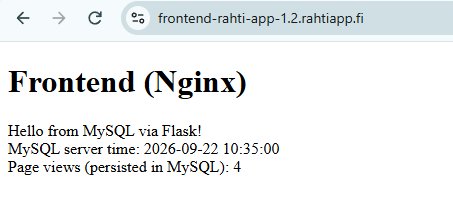
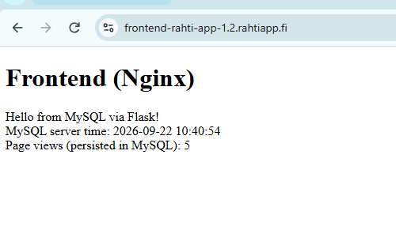
4 became 5, not 0 or 1. That's the actual proof: the data now lives on the bound PersistentVolumeClaim rather than inside whichever Pod happens to be running.
Pushing on it deliberately
What happens when a Pod disappears
Killing the backend on purpose
A Deployment is supposed to notice when it has fewer Pods than it wants and fix that itself. I deleted the running backend Pod to see it happen:
PS C:\Cloud Service\lemp-containers> .\oc delete pod backend-779744986f-p49ff pod "backend-779744986f-p49ff" deleted from rahti-app-1 namespace PS C:\Cloud Service\lemp-containers> .\oc get pods -w NAME READY STATUS RESTARTS AGE backend-779744986f-zcsl9 1/1 Running 0 47s ...
A replacement Pod appeared within seconds. The Deployment continuously compares its actual Pod count against spec.replicas; the moment it sees a shortfall, its ReplicaSet schedules a new one — no manual intervention needed.
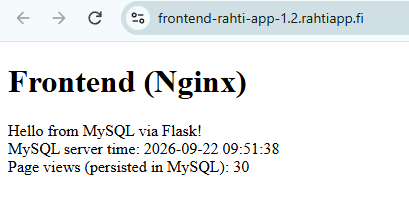
Running two backends at once
Next, scaling the backend up from one replica to two, to confirm multiple copies can genuinely run side by side:
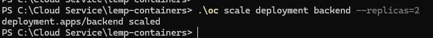
oc scale deployment backend --replicas=2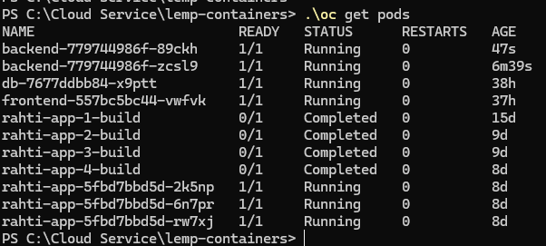
1/1 Running.The frontend never had to change or learn a second address — it only ever talks to the backend Service, which spreads requests across whatever Pods are currently healthy behind it. After confirming the app still worked fine with two replicas, I scaled back down to one:
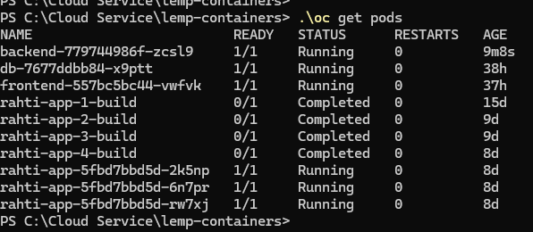
Keeping the password out of Git
ConfigMap and Secret, and why they're not the same thing
The backend reads its database settings from two different places, split by how sensitive each value is:
- A ConfigMap (
app-config) holdsDB_HOST,DB_NAME, andDB_USER— plain configuration, fine to read in the clear. - A Secret (
mysql-secret) holdsDB_PASSWORDandMYSQL_ROOT_PASSWORD— values that shouldn't be sitting in a file in Git or visible in a casualoc get.
Kubernetes stores Secret data base64-encoded and access-controlled separately from ConfigMaps, so it doesn't show up in plain text by accident the way a ConfigMap does. Just as importantly, the Secret was created directly on the cluster with oc create secret rather than from a YAML file — the password never had to touch the Git repository at all.
Shipping a change
Rolling out the read/write feature
Adding the read and write endpoints doubled as the assignment's application-update experiment. Both images got new version tags and were redeployed:
| Image | Before | After |
|---|---|---|
| ruvindra/lemp-backend | 1.0.0 | 1.0.1 |
| ruvindra/lemp-frontend | 1.0.1 | 1.0.2 |
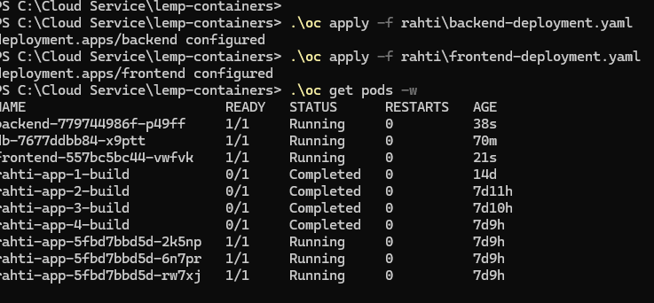
1/1 Running, replacing the old ones with no gap in the Service.Continuing the diary
Week 5 — Adding a Redis Cache
Same app, same Rahti project — api/time & api/visits display on the top of the page
Part A
Questions & answers
1. Explain the difference between SAML and OAuth? When would a company choose one over the other?
SAML and OAuth solve different problems. SAML (Security Assertion Markup Language) is designed for authentication and Single Sign On (SSO). It verifies who a user is and passes that identity from an identity provider (IdP), such as Okta or Azure AD, to a service provider. The user logs in once and gets access to several applications. SAML exchanges verbose XML assertions and is built mainly for enterprise web applications and corporate intranets.
OAuth (Open Authorization) is designed for authorization and delegated access. It lets an application access specific data or APIs on a user's behalf without ever seeing their password. Instead of an identity assertion, the application receives an access token, and the messages are lightweight JSON over HTTP. This makes OAuth a better fit for modern web apps, mobile apps, and public APIs.
A company would choose SAML for enterprise employee login, where staff sign in once through a corporate IdP and reach both internal and external workplace software such as Salesforce or Workday. It is also a good choice when legacy corporate systems require detailed, structured security assertions and strict single logout.
A company would choose OAuth when its application needs permission to read a user's data from another service. An example is a scheduling app accessing a user's Google Calendar without seeing their password. It also suits mobile apps, single page apps, and modern RESTful APIs, where the overhead of XML would be too heavy.
2. Describe how a decentralized or cooperative storage network (for example Sia or IPFS) differs from centralized object storage such as Allas or Amazon S3. What are the trade-offs?
Centralized storage such as Amazon S3 or CSC's Allas keeps your data in data centers run by one organization. Files are found by location (a URL pointing to that provider's servers), and you get a legally binding SLA for durability and availability.
Decentralized networks like IPFS and Sia rely on independent nodes around the world. In IPFS, files are content addressed: the identifier (CID) is a hash of the file itself, so any node holding a copy can serve it. Sia splits files into encrypted pieces, spreads them across hosts, and uses smart contracts and collateral to keep them available.
Performance and reliability: S3 and Allas offer predictable speed and contractual uptime. Decentralized speed varies with the number and quality of nodes, and there is no legal guarantee. In IPFS, unpinned content can disappear.
Censorship resistance and lock-in: A central provider can remove content or block accounts. Widely replicated decentralized content is much harder to take down, and a CID stays valid when you switch pinning services.
Privacy and compliance: Centralized providers offer regional data control and certifications such as GDPR and HIPAA. IPFS content is public by default, so sensitive data must be encrypted before upload.
Complexity and cost: S3 is simple, standard, and billed in normal currency. Decentralized storage needs pinning services, nodes, or (for Sia) cryptocurrency. It can be cheaper for archival or popular content, but costs are less predictable.
Choose centralized storage for enterprise apps, private data, compliance, and predictable performance. Choose decentralized storage for public, immutable, or archival content, blockchain applications, and avoiding dependence on a single provider.
3. What is YAML and why has it become the default configuration format for Kubernetes/Rahti manifests? Compare it briefly to JSON.
YAML is a human-readable data serialization format. It represents structured data (key-value mappings, lists, and scalars such as strings and numbers) using indentation, colons, and hyphens instead of brackets and quotation marks. It was designed to be easy for people to read and write, and it supports comments with #.
Kubernetes manifests are configuration files that people write, review, and keep in Git. YAML suits that work for several reasons. Deeply nested structures like pods, containers, ports, and volumes are easier to scan without braces and quotes. Comments let you explain why a setting exists, which JSON does not allow. Changes between versions are also easy to see in Git diffs. A single YAML file can hold several resources, such as a Deployment, a Service, and a Route, separated by ---. Finally, convention plays a big role: documentation, examples, and tools such as Helm and kubectl all use YAML, so everyone follows the same style. Rahti is CSC's OpenShift-based platform, so it inherits the same convention. Kubernetes itself accepts both formats, and internally its API works with JSON, so YAML is the default by convention, not by requirement.
JSON uses braces, brackets, and quotation marks, while YAML relies on indentation and hyphens. Both are easy to read, but YAML is generally considered the easiest for people, which is why it suits files that humans write and review. JSON does not allow comments, whereas YAML lets you add them with #.
JSON is built into most programming languages, while YAML needs a library to parse it. This makes JSON the better choice for APIs and data exchange between applications, and YAML the better choice for configuration files such as Kubernetes manifests, Docker files, and CloudFormation templates. The main weakness of JSON is that it is verbose and has no comments. The main weakness of YAML is that indentation mistakes can break the file.
4. Explain what a peer-to-peer VPN (for example n2n) is used for, and how it differs from a traditional site-to-site VPN.
A peer-to-peer VPN connects individual devices directly to each other and builds a virtual network on top of the internet. Each device runs a small client (in n2n, an edge node) and joins the network as if it were plugged into the same LAN switch, wherever it physically is.
It is typically used to reach devices behind home routers or CGNAT without a static public IP or port forwarding, for direct collaboration and LAN gaming, and for lightweight remote access that does not depend on a corporate gateway or a paid VPN hub.
A site-to-site VPN connects whole networks, such as a branch office and headquarters. It is configured on the gateway routers or firewalls at each location, so every device behind them can communicate without any client software. It is a fixed, admin-managed setup, and if a gateway goes down, the whole site loses its connection.
A P2P VPN connects individual devices instead. The software is installed on each endpoint, devices can join or leave the mesh at any time, and traffic flows directly between peers. If one peer drops, the others keep communicating.
Source: https://www.puredome.com/blog/difference-between-point-to-point-and-site-to-site-vpn
Part B
Adding a Redis cache to the stack
Here are the steps I used for the Week 5 hands-on part, and why I ran each command.
-
First, I added
redis==5.0.1tobackend/requirements.txt, so that when the image is built,pipinstalls the Redis client library the backend needs.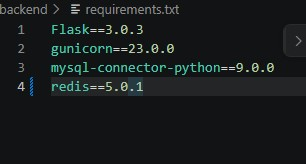
-
Then I imported
redisinapp.pyand created a client pointed atREDIS_HOST, so the backend has a live connection to Redis to read and write cached values.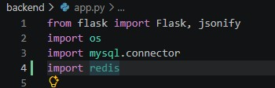
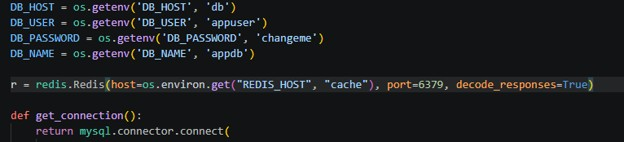
-
I wrote the
/api/timeroute to check Redis first (r.get) and only query MySQL if nothing was cached, then save the result for 5 seconds withr.setex— this is the actual caching logic, so a repeated request within 5 seconds skips the database entirely.@app.get('/api/time') def db_time(): cached = r.get('db_time') if cached: return jsonify(server_time=cached, cached=True) conn = get_connection() cur = conn.cursor() cur.execute("SELECT NOW()") row = cur.fetchone() cur.close() conn.close() server_time = str(row[0]) r.setex('db_time', 5, server_time) return jsonify(server_time=server_time, cached=False) -
Next, I wrote
redis-deployment.yamlandredis-service.yaml, so Redis runs as its own Pod on Rahti with a stable internal address, the same way the other three tiers already do.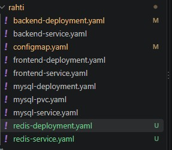
-
I ran
oc apply -fon both new files, to create the Redis Deployment and Service on the cluster.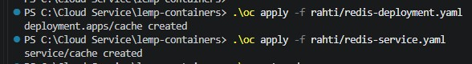
-
I ran
oc get podsandoc get svc, to check that thecachePod actually came up and that its Service is listening on port 6379.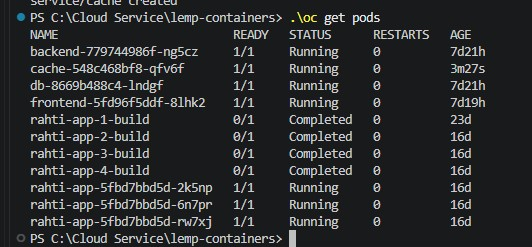
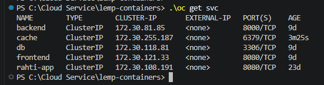
-
I added
REDIS_HOST: "cache"toconfigmap.yaml, so the backend gets the Redis hostname from configuration instead of it being hard-coded in the Python file.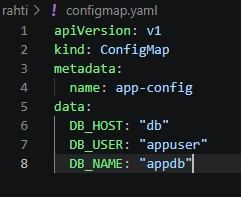
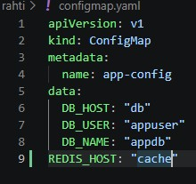
-
I ran
oc apply -f rahti/configmap.yaml, to push that new setting onto the cluster.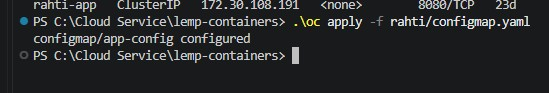
/api/visits code with a Redis-based version and ended up with two functions both named get_visits, which crashed the app on startup:
AssertionError: View function mapping is overwriting an existing endpoint function: get_visits
I removed the duplicate block, keeping one GET route to read the count and one POST route to increment it.
redis.exceptions.ResponseError: MISCONF Redis is configured to save RDB snapshots, but it's currently unable to persist to disk
I added these two lines to the Redis Deployment, to turn off disk snapshotting entirely — safe to do since it's just a disposable cache, not durable storage:
command: ["redis-server"] args: ["--save", "", "--stop-writes-on-bgsave-error", "no"]
-
I rebuilt the backend image with
docker buildand pushed it to Docker Hub as1.1.0, so the new code (with Redis and both bugs fixed) is available for Rahti to pull.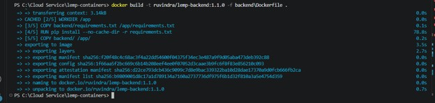
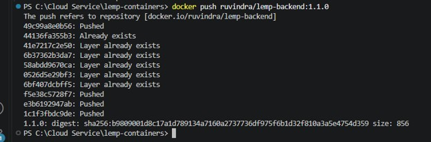
-
I ran
oc set image deployment/backend backend=ruvindra/lemp-backend:1.1.0, to tell the backend Deployment to switch to the new image tag — a quicker way to bump just the tag without editing the YAML file by hand.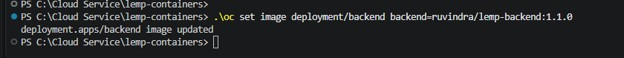
-
I ran
oc rollout statuson bothbackendandcache, to confirm the rollout actually finished and the new Pods are healthy.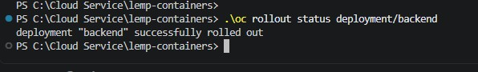
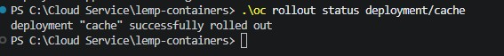
-
I checked
oc logs deployment/backend, to make sure Gunicorn started clean with no traceback this time.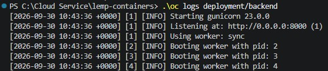
-
I ran
oc get podsonce more, to see all four tiers — backend, cache, db, and frontend — running together.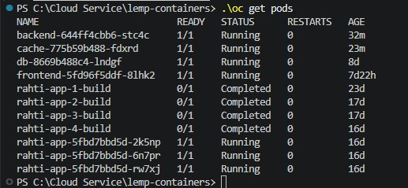
-
To prove the cache was actually doing something, I opened
/api/timetwice in the browser within a few seconds — the first call to seecached: false(read from MySQL), the second to seecached: true(served from Redis).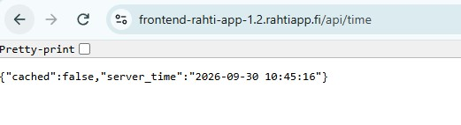
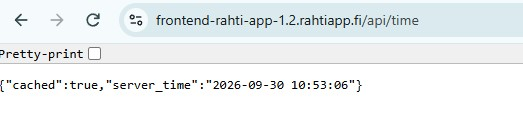
-
I also checked
/api/visits, to confirm the visit counter was unaffected by any of this — it still lives entirely in MySQL, not Redis.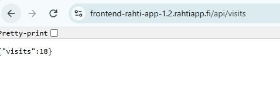
-
I ran
oc delete podon thecachePod on purpose, to check that the Deployment notices and replaces it automatically — same self-healing behaviour as Week 4, now with a fourth tier.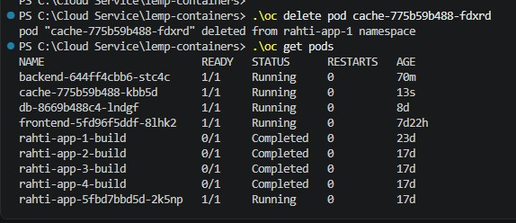
-
I did the same to the
dbPod, to double-check that MySQL's PersistentVolumeClaim from Week 4 still holds now that Redis is part of the stack.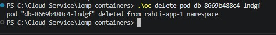
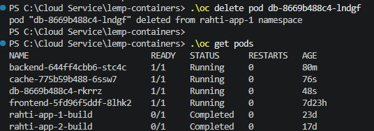
A new
dbPod came up within seconds, and the visit count picked up exactly where it left off — nothing was lost.
Continuing the diary
Week 6 — CI/CD, DevOps Automation & Observability
Same app, same Rahti project — this week's job was to stop deploying by hand and start watching the app from the outside.
Part A
Questions & answers
This week's conceptual questions, answered in my own words before starting the hands-on part below.
1. Explain the difference between Continuous Integration, Continuous Delivery and Continuous Deployment.
Continuous integration (CI) is the practice of automatically checking code changes to get fast feedback on whether they work. Every time a developer commits a change, a CI server pulls the code from source control, builds it, and runs automated tests such as unit tests, integration tests, and static analysis. For example, if a developer pushes a change to a Git repository, the CI server might run the test suite within minutes and immediately flag a failing test, rather than letting the problem surface days later. If any step fails, the developer gets automatic feedback and fixes the issue before the process starts again.
Continuous delivery and continuous deployment both pick up where CI leaves off, and they are often confused because they look almost identical up to the final step. In both, a build that passes CI is automatically deployed to one or more test environments, where further automated checks run, such as end-to-end tests, performance tests, and security tests. The real difference between them is what happens at the very last stage, the release to production.
With continuous delivery, the build is kept in a constant state of being ready to release, but an actual person has to approve and trigger the release to production. This suits something like a mobile app or an API, where you might not want to ship a new version after every single commit, and instead prefer to release on a schedule or wait until you have a meaningful batch of changes.
With continuous deployment, there is no manual approval step at all. Every change that passes all the automated tests is released to production automatically, sometimes several times a day. This fits web applications and services well, since it allows teams to ship small changes continuously and get fast feedback from real users, and to roll out a fix quickly if something goes wrong.
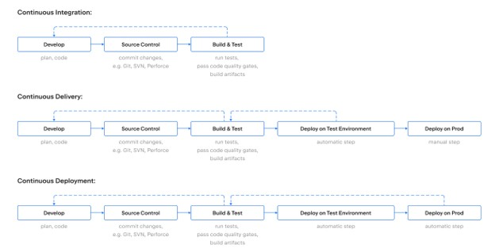
Source: https://www.jetbrains.com/teamcity/ci-cd-guide/continuous-integration-vs-delivery-vs-deployment/
2. Explain the difference between a liveness probe and a readiness probe in Kubernetes/Rahti. What happens when each one fails?
Both Liveness probes and readiness probes monitor container health, but they ask different questions. A liveness probe asks whether the container is still functioning or has gotten stuck in an unrecoverable state, such as a deadlock. A readiness probe asks a narrower question: is the container currently able to handle requests?
Because of this, a liveness probe should only check the local process, for example a lightweight /healthz endpoint, without reaching external services. A readiness probe is allowed, and often expected, to check dependencies like a database connection or a cache, since those genuinely affect whether traffic should reach the Pod.
What happens when a liveness probe fails: After enough consecutive failures (failureThreshold, default 3), Kubernetes assumes the application can't recover on its own. The kubelet kills the container and restarts it. This is useful for something like a real deadlock, but dangerous if the liveness probe checks an external dependency: a brief database outage could then trigger repeated restarts across all affected Pods, producing a CrashLoopBackOff, even though the application code was never the problem.
What happens when a readiness probe fails: The container is left running untouched. Instead, the Pod is removed from the Service's list of endpoints, so no new traffic reaches it until the probe succeeds again. This helps during startup, and also lets an overloaded Pod step out of rotation, recover, and rejoin the pool without a disruptive restart.
In a booking app, using a complex endpoint like /flights (which depends on downstream services) as the liveness probe could cause restarts for problems that aren't the app's fault. The fix is a simple /healthz endpoint for liveness, and a separate /ready endpoint that checks dependencies for readiness.
Sources: https://kubernetes.io/docs/concepts/workloads/pods/probes/, https://www.redhat.com/en/blog/liveness-and-readiness-probes
3. Why should secrets (registry tokens, cluster login tokens) never be hard-coded into a CI/CD pipeline file? How does GitHub Actions handle this instead?
CI/CD pipelines are usually the most privileged systems in an organization's infrastructure, since they hold credentials to push to registries, deploy to production, and query cloud APIs. Hardcoding a registry token or cluster login token into a pipeline file turns that file into a live credential anyone who can read it can use.
A few key reasons this is dangerous: deleting a secret from the current version of a file doesn't remove it from git history, so every clone of the repo still contains it unless the history itself is rewritten, meaning the real fix is to treat it as compromised and rotate it. Private repositories aren't safe by default either, hardcoded secrets are actually more common there than in public repos. Rotation also becomes a manual, error-prone process, since someone has to find and update every file referencing the token across potentially many repositories. And hardcoded tokens tend to leak further, since they're one step away from being accidentally echoed into build logs.
How GitHub Actions handles this instead:
- Encrypted secrets, injected at runtime: tokens are stored through the repository's secret store (repo, environment, or org level), encrypted at rest, and only injected as environment variables when a workflow runs, via ${{ secrets.SECRET_NAME }}.
- Automatic log masking: GitHub Actions redacts text matching a known secret value in workflow output, though this is a safety net, not a substitute for care.
- Scoped secrets: secrets can be limited to a repository, organization, or specific environment (e.g. production), with environment secrets optionally requiring manual approval before use.
- Pinned actions: third-party actions have access to a job's secrets, so actions should be pinned to an immutable commit SHA rather than a mutable tag, preventing a hijacked tag from silently gaining access.
- OIDC federation: for cloud or cluster access, GitHub Actions can skip stored credentials entirely. The runner requests a short-lived, signed token proving its identity, and the provider issues temporary credentials valid only for that job, removing the static-credential problem at its root.
Sources: https://pangea.cloud/securebydesign/secrets-cicd-safety/ , https://github.com/github/awesome-copilot/blob/main/instructions/github-actions-ci-cd-best-practices.instructions.md
4. What are the three pillars of observability (metrics, logs, traces)? Give an example of a question each one is best suited to answer.
Metrics are numeric measurements tracked over time, such as CPU usage, request rate, or error percentage. They are aggregated and cheap to store, making them well suited to dashboards and alerting.
Example "What is the current CPU utilization across our server pool, or has API error rate spiked in the last five minutes?"
Logs are timestamped, detailed records of individual events, often including error messages, stack traces, and transaction IDs. They provide the specific context needed to understand a single occurrence.
Example "Why did this specific database query fail, and what exact error message did the application output?"
Traces follow a single request as it moves through a distributed system, broken into spans that show which services were called, in what order, and how long each step took.
Example "Where along the chain of microservices did this particular request experience a delay or breakdown?"
How they work together
No single pillar gives the full picture. A typical workflow is a metric alert fires because latency crossed a threshold, a trace shows which service in the request path introduced the delay, and logs from that specific service reveal the actual error message behind it. Metrics tell something is wrong, traces tell where, and logs tell why.
Sources: :- https://cribl.io/blog/the-3-pillars-of-observability/, https://www.quicknode.com/answers/metrics-vs-logs-vs-traces, https://www.netdata.cloud/academy/pillars-of-observability/, https://www.ibm.com/think/insights/observability-pillars
Part B
Building a pipeline, then watching the app from outside
Two pieces this week: a GitHub Actions workflow that builds, pushes, and deploys the backend automatically, and a pair of health probes plus structured logging so the app's own behaviour is actually observable instead of just assumed.
1. The CI/CD pipeline
I wrote .github/workflows/backend-deploy.yaml, triggered on every push to main that touches the backend/ folder or the workflow file itself. It builds the backend image tagged with the commit SHA, pushes it to Docker Hub, installs the oc CLI on the runner, and patches the live Deployment with oc set image — the same command I'd otherwise run by hand.
name: Build and Deploy Backend to Rahti
on:
push:
branches: [main]
paths:
- 'backend/**'
- '.github/workflows/backend-deploy.yaml'
jobs:
build-and-deploy:
runs-on: ubuntu-latest
steps:
- uses: actions/checkout@v4
- name: Set image tag
run: echo "IMAGE_TAG=${{ '${{ github.sha }}' }}" >> $GITHUB_ENV
- name: Build backend image
run: docker build -t ruvindra/lemp-backend:$IMAGE_TAG -f backend/Dockerfile .
- name: Log in to Docker Hub
uses: docker/login-action@v3
with:
username: ${{ '${{ secrets.DOCKERHUB_USERNAME }}' }}
password: ${{ '${{ secrets.DOCKERHUB_TOKEN }}' }}
- name: Push image
run: docker push ruvindra/lemp-backend:$IMAGE_TAG
- name: Install oc CLI
uses: redhat-actions/openshift-tools-installer@v1
with:
oc: "4"
- name: Deploy to Rahti
run: |
oc login --token=${{ '${{ secrets.RAHTI_TOKEN }}' }} --server=${{ '${{ secrets.RAHTI_SERVER }}' }}
oc set image deployment/backend backend=ruvindra/lemp-backend:$IMAGE_TAG
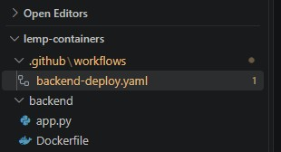
.github/workflows/.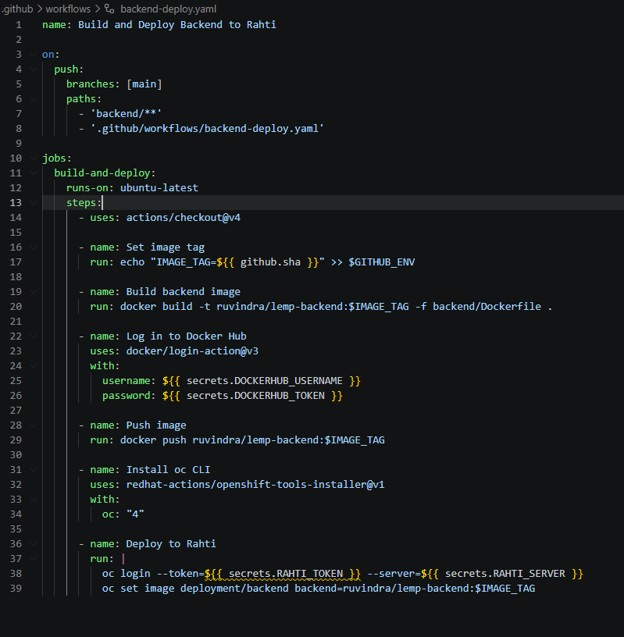
All four credentials it needs — DOCKERHUB_USERNAME, DOCKERHUB_TOKEN, RAHTI_SERVER, and RAHTI_TOKEN — are GitHub repository secrets, referenced only as ${{ '${{ secrets.NAME }}' }} and never visible as values anywhere, including in this screenshot of the repository's secret list:
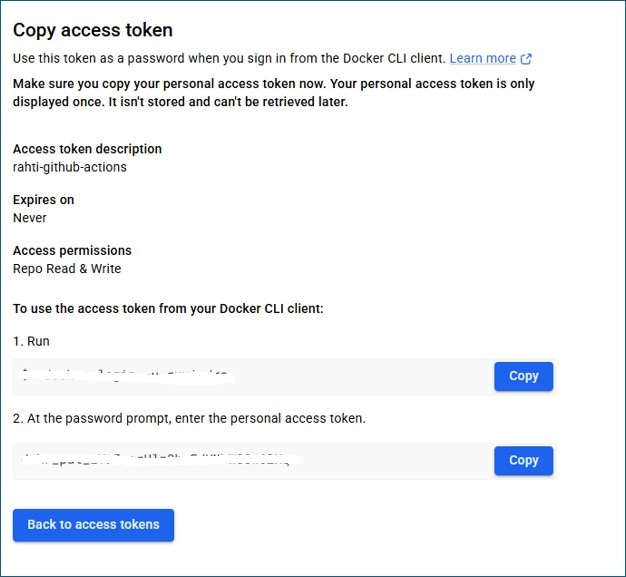
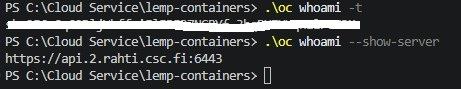
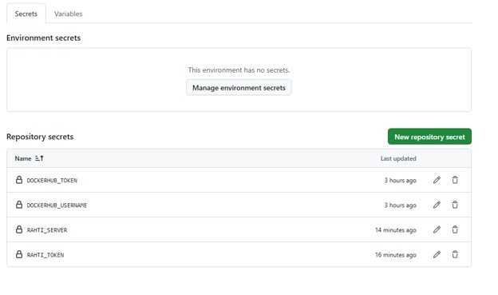
Getting there took two failed runs first
The first attempts didn't work, which turned out to be useful debugging practice:
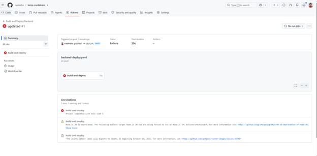
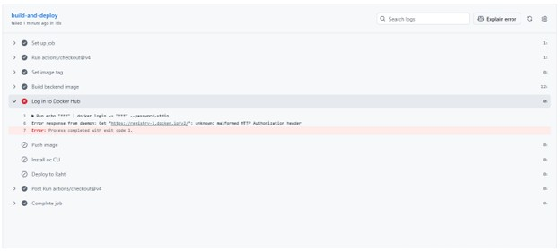
malformed HTTP Authorization header — the manual echo | docker login --password-stdin approach was the cause, fixed by switching to the official docker/login-action@v3.The run that worked
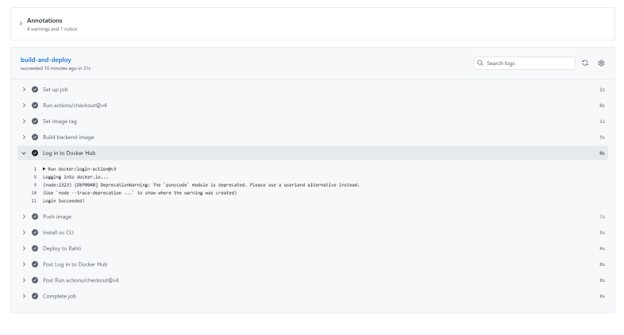
Login Succeeded! on the Docker Hub step.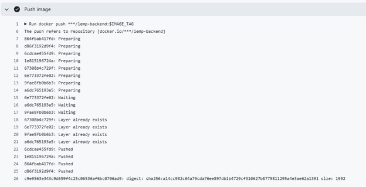
Proof it actually deployed, not just built
A green checkmark only proves the YAML ran — it doesn't prove Rahti changed. So I checked the live cluster state against the commit that triggered the run:
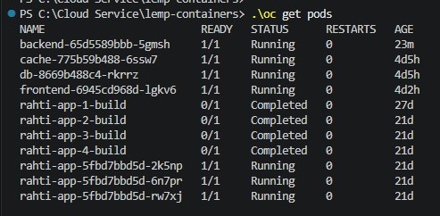
oc get pods — a brand-new backend pod age right after the run finished.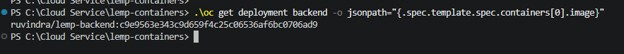
oc get deployment backend -o jsonpath=... — the running image's tag is the exact commit SHA that triggered the build, proving traceability end-to-end.2. Liveness and readiness probes
I reused the existing /api/health route as the liveness check — it only confirms the Flask process itself responds, with no outside calls — and added a new /ready route that actually attempts a database connection:
@app.get('/ready')
def ready():
"""Readiness: checks the DB dependency, not just the process."""
try:
conn = get_connection()
conn.close()
return jsonify(status='ready'), 200
except Exception as e:
return jsonify(status='not ready', error=str(e)), 503
Then I attached both probes to the live Deployment directly, the same way I'd patch an image tag:
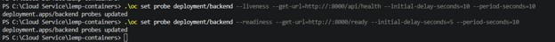
deployment.apps/backend probes updated for each.Making the readiness check actually fail
A probe that's only ever been green doesn't prove much, so I broke its one real dependency on purpose — scaling the database to zero replicas:
.\oc scale deployment/db --replicas=0
Before: the Service had one healthy endpoint. About 20 seconds after scaling the database down — enough for three failed checks at a 10-second period — the backend disappeared from the endpoint list entirely, while the Pod itself stayed Running with zero restarts:
PS C:\Cloud Service\lemp-containers> .\oc get endpoints backend NAME ENDPOINTS AGE backend 13d PS C:\Cloud Service\lemp-containers> .\oc get pods backend-855875b9c5-hnztk 0/1 Running 0 6m14s
That's the real distinction between the two probe types in practice: a failing readiness check pulls a Pod out of rotation without ever touching it, while only a failing liveness check would have caused a restart. After scaling db back to one replica and giving it time to come up, the backend's endpoint reappeared automatically — still zero restarts the entire time:
PS C:\Cloud Service\lemp-containers> .\oc get pods backend-855875b9c5-hnztk 1/1 Running 0 7m32s db-8669b488c4-mrjkz 1/1 Running 0 39s PS C:\Cloud Service\lemp-containers> .\oc get endpoints backend NAME ENDPOINTS AGE backend 10.131.30.118:8000 13d
(Screenshots of each oc get endpoints / oc get pods state to follow — the exact commands and their output are quoted above.)
3. Structured logging
I added a before_request/after_request hook that logs every request as one JSON line — timestamp, method, path, status code, response time — to stdout, which is exactly what oc logs reads:
logging.basicConfig(level=logging.INFO, format='%(message)s')
logger = logging.getLogger(__name__)
@app.before_request
def start_timer():
request.start_time = time.time()
@app.after_request
def log_request(response):
log_entry = {
'timestamp': time.strftime('%Y-%m-%dT%H:%M:%SZ', time.gmtime()),
'method': request.method,
'path': request.path,
'status': response.status_code,
'response_time_ms': round((time.time() - request.start_time) * 1000, 2)
}
logger.info(json.dumps(log_entry))
return response
PS C:\Cloud Service\lemp-containers> .\oc logs deployment/backend --tail=20
{"timestamp": "2026-10-04T18:27:55Z", "method": "GET", "path": "/api/health", "status": 200, "response_time_ms": 0.14}
{"timestamp": "2026-10-04T18:27:57Z", "method": "GET", "path": "/ready", "status": 200, "response_time_ms": 16.68}
{"timestamp": "2026-10-04T18:28:05Z", "method": "GET", "path": "/api/health", "status": 200, "response_time_ms": 0.1}
{"timestamp": "2026-10-04T18:28:07Z", "method": "GET", "path": "/ready", "status": 200, "response_time_ms": 16.23}
(Screenshot of the oc logs output to follow — the output itself is quoted above.)
/ready over a window rather than a single failure — e.g. "page on-call if more than 50% of /ready checks return non-200 for 2 consecutive minutes." A sustained /api/health (liveness) failure would get a higher-severity page of its own, since that means the process itself is stuck, not just a dependency outage like the one demonstrated above.malformed HTTP Authorization header even after re-pasting the token carefully. The manual echo "$TOKEN" | docker login --password-stdin approach was the culprit; switching that step to the official docker/login-action@v3 fixed it completely.
paths: filter referenced backend-deploy.yml while the actual file was named backend-deploy.yaml — GitHub silently skips a run when the only changed file doesn't match the filter. Fixing the extension in the filter fixed the trigger.
oc login --token= --server=*** — an empty token value. The RAHTI_TOKEN repository secret had never actually been added, only DOCKERHUB_USERNAME, DOCKERHUB_TOKEN, and RAHTI_SERVER existed. Generating a fresh token with oc whoami -t and adding it as a secret resolved it.
.env file containing the live database password had been committed before .gitignore existed, so .gitignore had no retroactive effect — it only blocks tracking of new files. Fixed by running git rm --cached .env to stop tracking it going forward, then rotating the actual database password so the historical leak in git history is no longer exploitable.